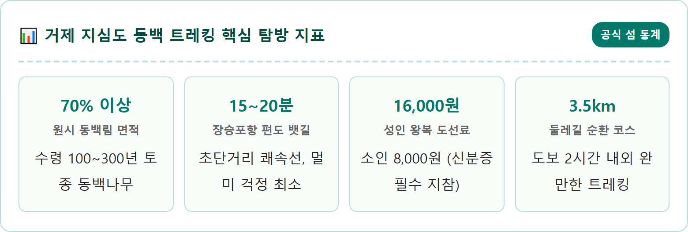
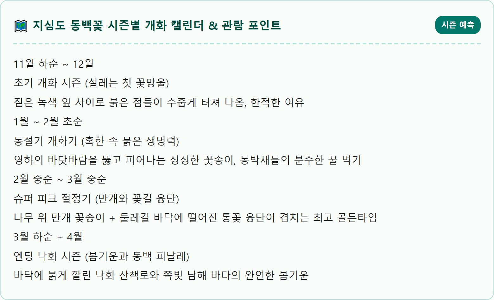
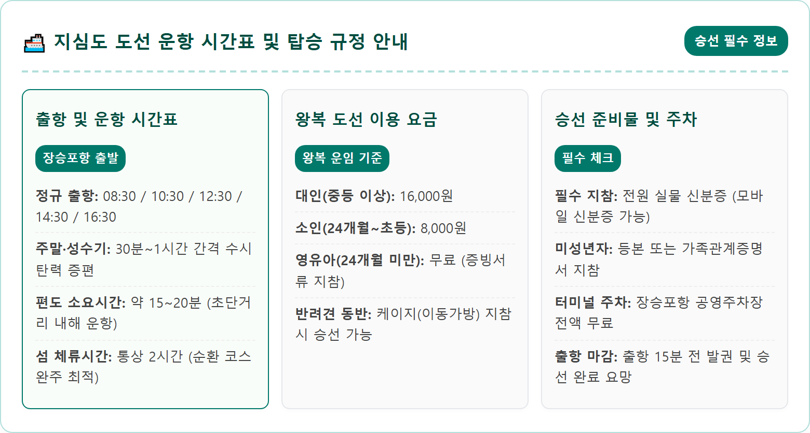
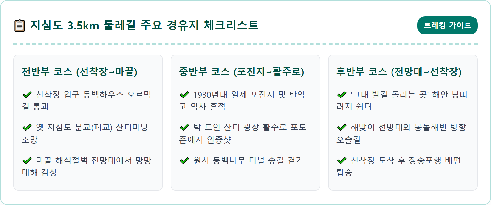
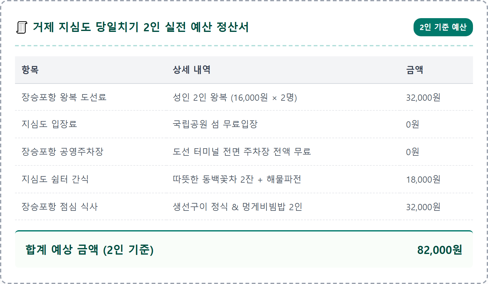
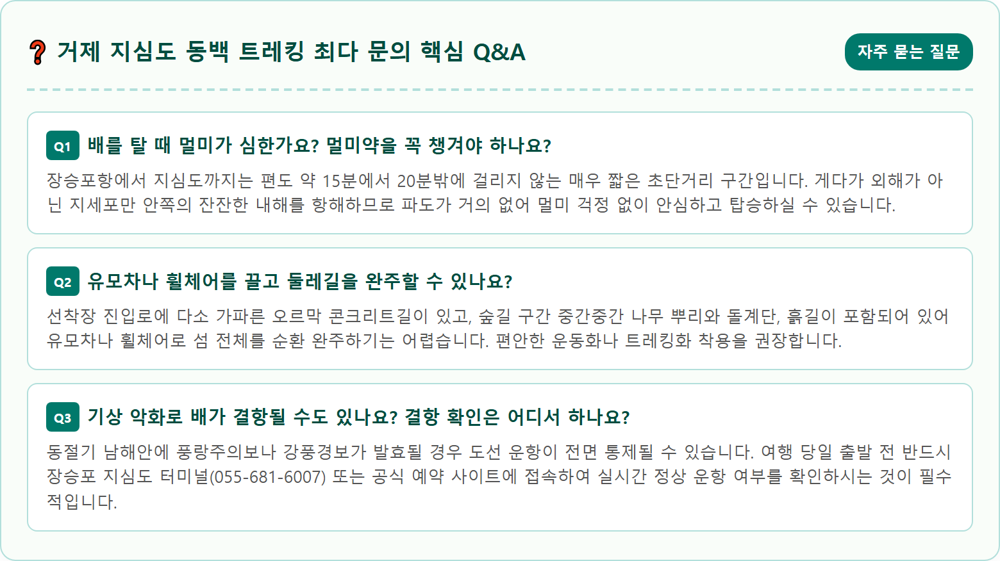

A cinematic, hyper-detailed photograph of Jisimdo Island in Geoje, South Korea during late autumn and early winter. A lush, ancient camellia forest tunnel with deep red camellia blossoms blooming on glossy evergreen branches. Some fallen red petals scatter gracefully along a rustic, soft earthen walking path. Through the arching branches of the dense tree canopy, the glittering deep cobalt-blue South Sea and dramatic coastal sea cliffs are illuminated by warm, brilliant morning sunlight. Gentle sea breeze, serene island atmosphere, rich natural colors, ultra-high definition, 8k resolution, photorealistic, 1:1 aspect ratio.
경상남도 거제시 일운면에 자리 잡은 '지심도(只心島)'는 하늘에서 내려다본 섬의 모양이 마음 심(心) 자를 닮았다고 하여 이름 붙여진 작고 아담한 남해의 섬입니다. 한려해상국립공원 구역에 속해 있는 지심도는 섬 전체 면적의 약 70% 이상이 수백 년 수령의 원시 동백나무 숲으로 덮여 있어 '동백섬'이라는 별칭이 전국에서 가장 완벽하게 어울리는 천혜의 생태 보고입니다.
인위적으로 조경수를 심어 가꾼 일반 수목원이나 공원과 달리, 지심도의 동백나무들은 사람의 손을 타지 않은 채 수백 년 세월 동안 자연 그대로 자라나 거대한 숲 터널을 형성하고 있습니다. 아름드리 동백나무들이 하늘을 빈틈없이 가리고 있어 대낮에도 숲길 안으로 들어서면 은은한 초록빛 그늘이 드리워지며, 빽빽한 나뭇잎 사이로 부서져 내리는 햇살이 몽환적인 분위기를 자아냅니다.
바다 위로 불어오는 청정한 해풍과 온난한 해양성 기후 덕분에 지심도의 숲길은 한겨울에도 싱그러운 초록의 생명력을 잃지 않습니다. 발을 디딜 때마다 느껴지는 폭신폭신한 흙의 감촉과 귓가를 간지럽히는 동박새의 청아한 지저귐, 그리고 코끝을 스치는 쌉싸름한 솔잎과 동백 숲의 피톤치드 향기는 뱃길을 건너온 여행자들의 피로를 단숨에 잊게 해줍니다.

지심도를 찾는 여행객들이 가장 궁금해하는 핵심 질문은 "도대체 언제 가야 가장 화려한 동백꽃을 볼 수 있는가"입니다. 동백꽃은 일반 봄꽃과 달리 개화 기간이 매우 길다는 독특한 생태적 특징을 가지고 있습니다. 지심도의 토종 동백은 찬 바람이 불기 시작하는 11월 중하순부터 가지 끝에 맺힌 단단한 꽃망울이 한두 송이씩 붉은 얼굴을 내밀기 시작합니다.
12월 초순과 중순에 접어들면 짙푸른 상록수 잎사귀 사이사이에 새빨간 꽃잎과 샛노란 수술이 뚜렷한 대비를 이루며 초겨울의 설레는 개막을 알립니다. 1월의 혹독한 한파 속에서도 꿋꿋하게 꽃송이를 피워 올리며, 기온이 점차 풀리는 2월 중순부터 3월 중순 사이에는 섬 전체가 말 그대로 붉은 물감을 쏟아부은 듯 만개의 절정을 맞이합니다.
특히 동백꽃은 나무에 매달려 있을 때 한 번, 꽃송이가 통째로 땅에 떨어져 붉은 카펫을 깔아놓았을 때 또 한 번, 그리고 여행자의 가슴속에서 마지막으로 한 번 핀다는 말이 있습니다. 2월 하순에서 3월 초순 사이에 방문하시면 머리 위 나무에 핀 생생한 동백꽃과 발아래 흙길에 융단처럼 깔린 낙화(落花)의 아름다움을 동시에 만끽할 수 있는 최고의 골든타임을 누릴 수 있습니다.

지심도로 들어가는 유일한 정규 뱃길은 거제시 장승포동에 위치한 '지심도 도선 통합터미널(장승포항)'에서 출발합니다. 옥포나 일운면의 다른 포구에서는 정규 도선이 운항하지 않으므로 내비게이션에 반드시 '장승포 지심도 터미널(거제시 장승포로 56-8)'을 검색하고 찾아오셔야 착오가 없습니다.
2026년 기준 정규 운항 시간표는 평일 기준 08:30, 10:30, 12:30, 14:30, 16:30으로 약 2시간 간격으로 1일 5회 왕복 운항합니다. 다만 주말이나 공휴일, 그리고 동백꽃이 만개하는 피크 시즌(12월~3월)에는 정규 시간표와 상관없이 이용객 수요에 맞춰 30분~1시간 간격으로 수시 증편 운항이 이루어집니다. 지심도에서 나오는 배편은 출항 후 약 2시간 뒤 배편으로 자동 배정되므로 섬에서 체류하는 시간은 보통 1시간 40분~2시간가량 확보됩니다.
도선 요금은 왕복 기준으로 대인(중학생 이상) 16,000원, 소인(만 2세~초등학생) 8,000원입니다. 해상 안전법에 따라 모든 탑승객은 반드시 '실물 신분증(주민등록증, 운전면허증, 여권)'을 지참해야 하며, 미성년자의 경우 주민등록등본이나 가족관계증명서를 준비하셔야 승선권 발권이 가능합니다. 터미널 앞에는 대형 무료 공영주차장이 넓게 완비되어 있어 주차 요금 부담 없이 차를 대고 승선할 수 있습니다.

지심도 선착장에 배가 닿으면 바다를 마주보고 가파른 오르막길이 잠시 펼쳐지지만, 5분 정도만 천천히 걸어 올라서면 섬 전체를 순환하는 완만한 둘레길 능선에 진입하게 됩니다. 지심도 트레킹 코스는 약 3.5km 길이로, 쉬엄쉬엄 사진을 찍으며 둘러보아도 성인 기준 약 1시간 40분에서 2시간이면 충분히 한 바퀴를 완주할 수 있습니다.
선착장을 출발해 가장 먼저 마주하는 핵심 포인트는 섬의 남쪽 절벽 끝자락에 위치한 '마끝(마끝 전망대)'입니다. 지심도 사람들은 남쪽을 '마'라고 불렀는데, 남쪽 끝 바위 절벽이라는 뜻의 마끝에 서면 탁 트인 남해의 망망대해가 파노라마로 펼쳐집니다. 거센 파도가 깎아지른 해식애 절벽에 부딪혀 하얀 포말로 부서지는 모습은 가슴 속까지 뻥 뚫리는 시원한 해방감을 선사합니다.
마끝을 둘러본 뒤 다시 숲길로 접어들면 일제강점기 군사 요새의 흔적인 탄약고와 포진지터를 지나게 되며, 곧이어 시야가 확 트이는 '활주로(넓은 초원 광장)'에 다다릅니다. 이곳에서는 과거 헬기 착륙장으로 쓰였던 푸른 잔디밭 너머로 푸른 바다를 배경으로 동백꽃 조형물과 함께 인생 사진을 남기기에 최고의 포토스팟입니다.

지심도 트레킹 코스를 걷다 보면 서정적인 자연경관과 역사의 상흔이 묘하게 교차하는 특별한 장소들을 연이어 만나게 됩니다. 섬 중앙 숲속에 은밀하게 숨겨져 있는 콘크리트 구조물들은 1930년대 일제강점기 당시 일본 해군이 진해만을 방어하기 위해 주민들을 강제 이주시키고 중포를 배치했던 요새화 유적입니다. 아픈 역사의 현장이지만 지금은 울창한 동백 숲과 덩굴식물이 감싸 안아 독특한 분위기를 자아냅니다.
섬의 북동쪽 끝자락 절벽에 다다르면 매우 낭만적이면서도 애틋한 팻말 하나를 발견하게 되는데, 바로 '그대 발길 돌리는 곳'이라는 전망 포인트입니다. 더 이상 앞으로 나아갈 수 없는 아찔한 깎아지른 수직 벼랑 끝에 벤치가 놓여 있어, 방문객들은 이곳에서 발길을 돌려야만 하기에 붙여진 이름입니다. 절벽 아래로 넘실대는 짙푸른 남해 바다와 저 멀리 희미하게 시야에 들어오는 대마도 방면의 수평선은 그야말로 장관입니다.
활주로 쉼터 옆에 위치한 야외 카페에서는 따뜻한 동백꽃차와 함께 갓 부쳐낸 해물파전을 맛볼 수 있습니다. 야외 파라솔 아래 앉아 바다를 내려다보며 붉은 동백꽃잎을 띄운 찻잔을 기울이는 시간은 지심도 여행자들만이 누릴 수 있는 특권이자 가장 소중한 여유의 순간입니다.

지심도 둘레길의 진정한 백미는 화려한 조망대 사이를 이어주는 고요한 동백나무 터널길 그 자체에 있습니다. 둘레길의 절반 이상이 사람 키의 두세 배를 훌쩍 넘는 거대한 동백나무들이 아치형으로 둥글게 몸을 웅크린 채 숲 터널을 이루고 있습니다. 흙길 양옆으로 솟은 고목들의 가지가 얽히고설켜 햇빛조차 차단하는 이 길에 들어서면, 바깥세상의 소음이 완벽하게 차단된 채 오직 자신의 발걸음 소리와 바람에 바스락거리는 나뭇잎 소리만이 귓전을 맴돕니다.
겨울철 바람이 세차게 부는 날에도 빽빽한 동백나무 숲 안쪽으로 들어서면 신기할 정도로 바람이 잦아들고 포근한 온기가 감돕니다. 두꺼운 동백 잎사귀들이 천연 방풍림 역할을 해주기 때문입니다. 떨어진 붉은 동백꽃잎을 주워 하트 모양을 만들거나 벤치 위에 가지런히 올려두고 사진을 찍는 연인들의 다정한 모습을 숲길 곳곳에서 쉽게 만날 수 있습니다.
특히 햇살이 비스듬히 기울어지는 오후 2시에서 3시 사이, 울창한 잎사귀 틈새로 내리쬐는 빛내림(햇살 기둥)은 동백 숲을 한층 더 신비롭고 성스러운 공간으로 탈바꿈시킵니다. 스마트폰 카메라를 들고 어디를 찍어도 엽서 속 한 장면 같은 감성적인 사진을 건질 수 있습니다.
2시간 동안의 상쾌한 섬 산책을 마치고 다시 배를 타고 장승포항으로 돌아오면 바닷바람에 기분 좋은 시장기가 찾아옵니다. 장승포항 일대는 거제도 동남부 어업의 중심지로, 갓 잡아 올린 싱싱한 남해안 해산물 요리를 전문으로 하는 유서 깊은 식당가가 부둣가를 따라 길게 형성되어 있습니다.
출출한 배를 달래기에 가장 추천할 만한 대표 메뉴는 노릇노릇하게 구워낸 '모둠 생선구이 정식'입니다. 뽈락, 갈치, 고등어, 조기 등 제철 생선들을 굵은 소금을 뿌려 겉은 바삭하고 속은 촉촉하게 구워내어 밥도둑이 따로 없습니다. 생선 살점을 큼직하게 발라 따끈한 쌀밥 위에 얹어 먹고, 구수한 해물 된장찌개 한 숟가락을 곁들이면 겨울 추위가 단숨에 녹아내립니다.
또 다른 별미는 바다 향을 입안 가득 품은 '거제 멍게비빔밥'입니다. 살짝 숙성시켜 향을 극대화한 주홍빛 멍게 살에 고소한 참기름과 김 가루, 깨소금, 신선한 채소를 넣고 젓가락으로 슥슥 비벼 먹으면, 쌉싸름하면서도 달콤한 멍게 특유의 감칠맛이 온몸의 미각을 깨워줍니다. 식사 후에는 항구 인근 오션뷰 카페에서 장승포 앞바다를 바라보며 따뜻한 커피 한 잔으로 여행을 마무리하기 좋습니다.
거제 지심도는 거제 본섬과 매우 가까워 배삯과 식비를 포함하더라도 2인 기준 8만 원 안팎의 매우 합리적인 예산으로 당일치기 섬 여행을 완벽하게 즐길 수 있는 최고의 가성비 여행지입니다. 별도의 섬 입장료나 문화재관람료가 전혀 없으며, 장승포항 도선 터미널 전면의 대형 공영주차장도 전액 무료로 개방되어 있어 추가적인 부대비용 발생이 거의 없습니다.
왕복 배삯 32,000원(2인 기준)과 섬 내 무인 카페 및 쉼터에서 즐기는 차 한 잔(약 10,000~18,000원), 그리고 장승포항에서의 푸짐한 해산물 식사(약 30,000~40,000원)를 모두 합산해도 1인당 약 4만 원 선에서 모든 코스가 해결됩니다.
만약 1박 2일 일정으로 거제를 방문하신다면 오전에 지심도를 다녀온 뒤 오후에는 차량으로 20분 거리인 '구조라성'과 '바람의 언덕', '신선대'를 묶어 남부면 드라이브를 즐기거나, 따뜻한 온수풀을 갖춘 거제 오션뷰 펜션에서 하룻밤을 묵어가는 1박 2일 힐링 로드트립을 구성하는 것도 대단히 훌륭한 선택이 됩니다.

지심도 여행을 빈틈없이 완벽하게 성공시키기 위해 출발 전 가방 속에 꼭 챙겨야 할 몇 가지 필수 체크리스트를 짚어드립니다. 가장 중요한 첫 번째는 단연 '전 탑승객 실물 신분증'입니다. 여객선 및 유도선 안전 규정에 따라 신분증 미지참 시 승선권 발권 자체가 법적으로 엄격히 거부되므로, 지갑 속 주민등록증이나 운전면허증, 혹은 행정안전부 모바일 신분증 앱을 반드시 미리 확인하시기 바랍니다.
둘째는 '접지력이 좋은 편안한 운동화' 착용입니다. 둘레길이 완만하긴 하지만 바닷가 특성상 습기를 머금은 흙길과 나무 데크 구간이 있어 미끄러운 구두나 슬리퍼를 신으면 낙상의 위험이 있습니다. 셋째는 '적절한 보온 레이어드 복장'입니다. 숲 안쪽은 바람이 없어 온화하지만 해안 절벽인 마끝이나 활주로, 전망대에 서면 매서운 바닷바람이 불어오므로 가볍게 벗고 입을 수 있는 방풍 겉옷과 머플러를 준비하는 것이 현명합니다.
천혜의 원시 동백나무 숲과 끝없이 펼쳐진 코발트빛 남해바다, 그리고 아기자기한 오솔길이 살아 숨 쉬는 거제 지심도. 올겨울, 번잡한 도시의 묵은 피로를 훌훌 털어내고 붉은 동백꽃잎이 안내하는 평화로운 섬길을 걸으며 잊지 못할 낭만적인 겨울 추억을 가득 담아보시기 바랍니다.
| 구분 | 세부 내용 | 이용 꿀팁 및 안내 |
|---|---|---|
| 출항 위치 | 경남 거제시 장승포로 56-8 (지심도도선통합터미널) | 내비게이션: 장승포 지심도 터미널 |
| 도선 요금 | 대인 16,000원 / 소인 8,000원 (왕복 기준) | 전원 실물 신분증 지참 필수 (미지참 승선 불가) |
| 운항 시간 | 08:30, 10:30, 12:30, 14:30, 16:30 (평일 5회) | 주말·동백 시즌 30분~1시간 간격 수시 증편 |
| 소요 시간 | 편도 뱃길 15~20분 / 섬 체류 약 2시간 | 둘레길 총 3.5km (도보 약 1시간 40분 완주) |
| 주차 안내 | 장승포항 도선 터미널 전면 대형 주차장 | 전액 무료 주차 / 대형 버스 주차 가능 |
| 개화 시즌 | 11월 하순 개화 ~ 2~3월 만개 절정 및 낙화 | 2월 말~3월 초 꽃송이+꽃길 융단 최고 피크 |